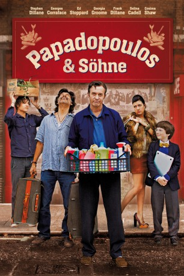

#3194 Papadopoulos & Söhne
Alternativ: Papadopoulos & Sons
 
 IMDB-Wertung: 6.1 / 10
IMDB-Wertung: 6.1 / 10  Metascore: 0
Metascore: 0 
Harry Papadopoulos hat es geschafft. Der englische Geschäftsmann mit griechischen Wurzeln hat alles, was er sich wünscht: eine riesige Villa, Auszeichnungen ohne Ende, den Lebensstil der englischen Upperclass. Alles seins. Doch dann bricht die Finanzkrise aus und die Banken fordern die sofortige Rückzahlung aller Kredite. Harry Papadopoulos verliert über Nacht alles. Ihm bleibt nur ein kleine, herunter gekommene Fish & Chips-Bude in einer fiesen Ecke Londons, die zur Hälfte auch noch seinem Bruder Spiros gehört, mit dem er kaum noch zu tun hat. Wohl oder übel vereint, beschließen sie, das Restaurant wieder auf Vordermann zu bringen…
Jahr: 2012
Dauer: 108 Minuten
FSK: 0
Land: England Studio: Neue Visionen FilmverleihTonspuren: DTS - ,
Untertitel:
Auflösung: 1080p (1920x816) Größe: 5939 MB
Genre: Drama, Komödie
Regisseur: Marcus Markou
Drehbuch: Marcus Markou
Soundtrack: Stephen Warbeck
Darsteller:
 Stephen Dillane als Harry Papadopoulos
Stephen Dillane als Harry Papadopoulos- Frank Dillane als James Papadopoulos
- Georgia Groome als Katie Papadopoulos
- Ivanno Jeremiah als Door Knocker
- Marcus Markou als News Reporter
- Ed Stoppard als Rob
 Cosima Shaw als Sophie
Cosima Shaw als Sophie Georges Corraface als Spiros Papadopoulos
Georges Corraface als Spiros Papadopoulos- George Savvides als Hassan Ali
- Cesare Taurasi als Mehmet Ali
 Richard Durden als Father Jimmy
Richard Durden als Father Jimmy- Carl Rice als Dave the Gardener
 Selina Cadell als Mrs. Parrington
Selina Cadell als Mrs. Parrington- Thomas Underhill als Theo Papadopoulos
- Martin Ball als Awards Presenter
- Chris Simmons als Photographer
- Jimmy Roussounis als Fat Laki
- Paul Herzberg als Nicholas
- George Potts als Rupert
- Matthew Douglas als Nigel
- Vangelis Christodoulou als Phil the Till
- Vasilis Panayi als Uncle Panikos
- Alexander Hanson als Lars
- Georgina Leonidas als Doctor
Datei: X:\2012(N-Z)\Papadopoulos & Söhne (2012, FSK0, 1920x816).mkv seit 11.02.2016
Festplatte: HD 2012(N-Z)-2013(A-H)
 Es gibt insgesamt 138 Filme in der Gruppe '2012(N-Z)'
Es gibt insgesamt 138 Filme in der Gruppe '2012(N-Z)'